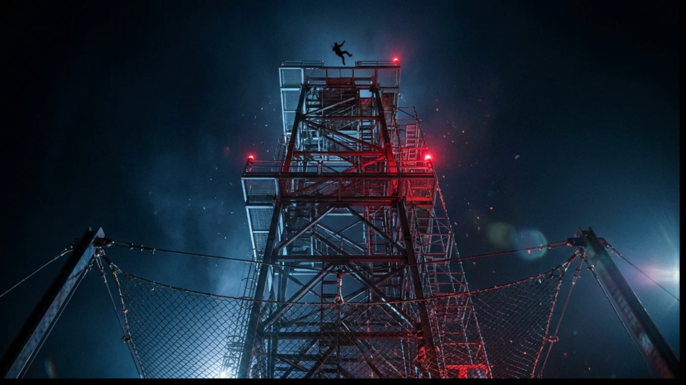
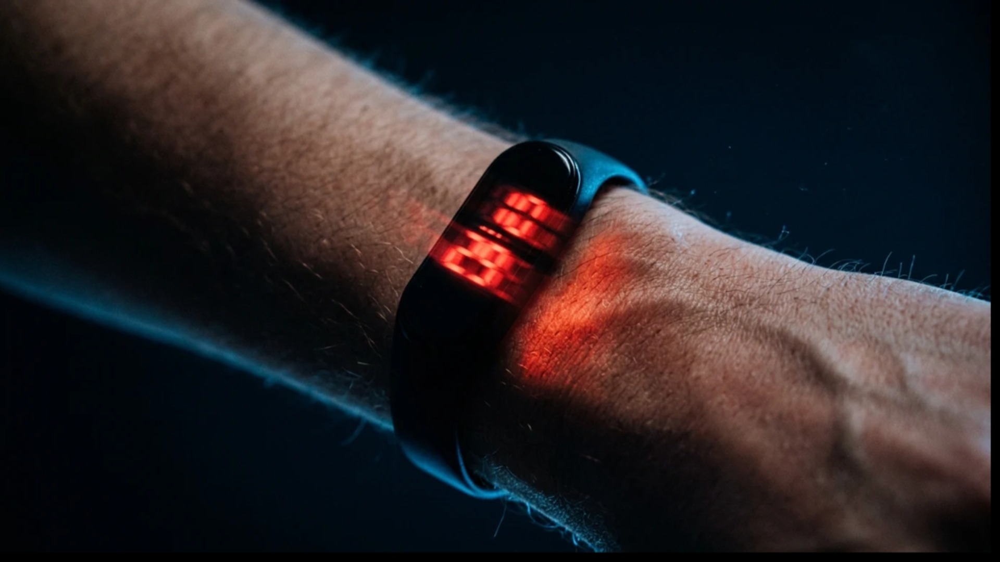

Volunteers fell 31 metres backwards into a net, wearing a wrist display that flashed numbers slightly too fast to read.
They judged their own fall about 36% longer — but could not read the numbers.
Source: Stetson, Fiesta & Eagleman (2007), PLoS ONE 2(12): e1295